건설재료시험산업기사 (2020-06-06 기출문제)
1과목: 콘크리트공학
1. 콘크리트 표준공시체를 이용하여 쪼갬 인장강도시험을 실시하였더니 95kN의 하중에서 파괴되었다. 인장강도? (단, 공시체의 지름은 100mm, 길이는 200mm이다.)
- 1.0MPa
- 3.0MPa
- 5.0MPa
- 7.0MPa
(정답률: 73%)

2. 콘크리트 구조물의 유지관리를 위한 콘크리트 강도 검사법이 아닌 것은?
- 반발경도법
- 초음파속도법
- 중성화 깊이 측정법
- 코어 공시체 강도에 의한 방법
(정답률: 62%)
3. 콘크리트의 배합에 대한 설명으로 틀린 것은?
- 배합강도 결정을 위한 콘크리트 압축강도의 표준편차는 실제 사용한 콘크리트의 20회 이상이 시험실적으로부터 결정하는 것을 원칙으로 한다.
- 콘크리트의 배합강도는 설계기준 압축강도보다 충분히 크게 정하여야 한다.
- 물-결합재비는 소요의 강도, 내구성, 수밀성 및 균열저항성 등을 고려하여 정하여야 한다.
- 단위수량은 작업이 가능한 범위 내에서 될 수 있는 대로 적게 되도록 시험을 통해 정하여야 한다.
(정답률: 73%)
4. 숏크리트의 시공에 관한 설명으로 틀린 것은?
- 숏크리트 재료의 온도가 10℃~32℃범위에 있도록 한 후 뿜어붙이기를 실시하여야 한다.
- 숏크리트는 타설되는 장소의 대기 온도가 32℃ 이상이 되면 건식 및 습식 숏크리트 모두 뿜어붙이기를 할 수 없다.
- 건식 숏크리트는 배치 후 60분 이내에 뿜어붙이기를 실시하여야 한다.
- 아치 및 측벽부의 숏크리트 작업에서 1회 타설 두께는 100mm 이내가 되도록 한다.
(정답률: 61%)
5. 콘크리트의 크리프에 대한 설명으로 틀린 것은?
- 부재치수가 작을수록 크리프가 크다.
- 조강시멘트를 사용한 콘크리트는 보통시멘트를 사용한 경우보다 크리프가 크다.
- 재하 시의 재령이 작을수록 크리프가 크다.
- 물-시멘트비가 클수록 크리프가 크다.
(정답률: 55%)
6. 고강도 콘크리트란 설계기준압축강도가 보통(중량)콘크리트에서 얼마 이상인 콘크리트를 말하는가?
- 30 MPa
- 35 MPa
- 40 MPa
- 50 MPa
(정답률: 84%)
7. 블리딩으로 인하여 콘크리트나 모르타르의 표면에 떠올라서 가라앉은 물질이 무엇이라고 하는가?
- 타르
- 모르타르
- 레이턴스
- 실리카 퓸
(정답률: 77%)
8. 프리스트레싱에 대한 내용으로 틀린 것은?
- 간장재는 각각의 PS 강재에 소정의 인장력이 주어지도록 긴장하여야 한다.
- 프리텐션 방식의 경우 긴장재에 주는 인장력은 고정장치의 활동에 의한 손실을고려하여야 한다.
- 프리스트레싱 작업 중에 발생되는 위험을 예방하기 위해서는 인장장치 뒤에서 작업을 감독하여야 한다.
- 각 PS 강재의 처짐에 의한 길이의 차를 없애기 위해서는 고정장치 사이에 간격재를 두어 각 강재의 처짐을 가지런히 하던가 고정하기 전에 미리 PS 강재를 적당하게인장해 두어야 한다.
(정답률: 73%)
9. 다음 관리도의 종류 중 정규분포이론을 적용한 계량 값의 관리도에 속하지 않는 것은?
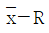
관리도(평균값과 범위의 관리도)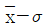
관리도(평균값과 표준편차의 관리도)- x 관리도(측정값 자체의 관리도)
- p 관리도
(정답률: 74%)
10. 서중 콘크리트에 관한 설명 중 틀린 것은?
- 콘크리트는 비빈 후 즉시 타설하여야 하며, 지연형 감수제를 사용하는 등의 일반적인 대책을 강구한 경우라도 2시간 이내에 타설하여야 한다.
- 일반적으로 기온 10℃의 상승에 대하여 단위수량은 2~5% 증가하므로 소요의 압축강도를 확보하기 위해서는 단위수량에 비례하여 단위 시멘트량의 증가를 검토하여야 한다.
- 하루 평균기온이 25℃를 초과하는 것이 예상되는 경우 서중 콘크리트로 시공하여야 한다.
- 콘크리트를 타설할 때의 콘크리트의 온도는 35℃ 이하이어야 한다.
(정답률: 57%)
11. 보통포틀랜드 시멘트를 사용한 콘크리트의 습윤 양생 기간의 표준으로 옳은 것은? (단, 일평균 기온이 15℃ 이상인 경우)
- 3일
- 5일
- 7일
- 14일
(정답률: 66%)
12. 프리스트레스 도입 즉시 발생하는 손실의 원인으로 틀린 것은?
- 포스트텐션 긴장재와 덕트 사이의 마찰
- 정착장치의 활동
- 콘크리트의 탄성수축
- 긴장재 응력의 릴랙세이션
(정답률: 54%)
13. 30회 이상의 압축강도 시험으로부터 구한 압축강도의 표준편차가 5MPa이고, 콘크리트의 설계기준압축강도가 28MPa인 경우 배합강도는?
- 34.70MPa
- 36.15MPa
- 37.60MPa
- 39.⑤MPa
(정답률: 65%)
14. 수중콘크리트의 시공에 관한 설명으로 틀린 것은?
- 정수 중에 타설하는 것을 원칙으로 한다.
- 콘크리트를 수중에 낙하시키지 않아야 한다.
- 콘크리트가 경화될 때까지 물의 유동을 방지하여야 한다.
- 밑열림 상자나 밑열림 포대를 사용하는 것을 원칙으로 한다.
(정답률: 74%)
15. 외기온도가 25℃ 이하이고, 콘크리트를 2층으로 나누어 타설할 경우 이어치기 허용시간 간격의 표준으로 옳은 것은?
- 1시간
- 1.5시간
- 2시간
- 2.5시간
(정답률: 54%)
16. 콘크리트의 슬럼프 시험방법에 대한 설명으로 옳지 않은 것은?
- 슬럼프 시험은 윗면의 안지름이 10cm, 밑면의 안지름이 20cm, 높이 30cm의 슬럼프콘을 사용하여 시험한다.
- 슬럼프콘에 채워 넣은 콘크리트는 각 10cm 높이로 3층으로 나누어 채워 넣는다.
- 나누어 채워 넣은 콘크리트 각 층의 다짐은 25회씩 똑같이 다진다.
- 슬럼프콘에 콘크리트를 채우기 시작하고 나서 슬럼프콘의 들어 올리기를 종료할 때까지의 시간은 3분 이내로 한다.
(정답률: 56%)
17. 콘크리트의 진동다짐을 할 때 내부진동기를 아래층 콘크리트 속에 얼마 정도 찔러 넣어야 하는가?
- 0.⑤m
- 0.1m
- 0.3m
- 0.5m
(정답률: 73%)
18. 매스 콘크리트나 하정기 등 온도가 높을 때 시공에서 온도 균열을 방지하기 위해 지료의 일부 또는 전부를 미리 냉각시키는 것을 나타내는 용어는?
- 프리쿨링(precooling)
- 프리웨킹(prewetting)
- 파이프쿨링(pipecooling)
- 프리스트레싱(prestressing)
(정답률: 63%)
19. 콘크리트 비비기에 관한 설명으로 틀린 것은?
- 비비기 시간에 대한 시럼을 실시하지 않은 경우 그 최소시간은 가경식 믹서일 때에는 1분 이상을 표준으로 한다.
- 재료를 믹서에 투입하는 순서는 강도시험, 블리딩시험 등의 결과 또는 실적을 참고로 해서 정하여야 한다.
- 비비기를 시작하기 전에 미리 믹서 내부를 모르타르로 부착한다.
- 비비기는 미리 정해 둔 비비기 시간의 3배 이상 계속하지 않아야 한다.
(정답률: 66%)
20. 다음 주어진 자료에서 절대용적방법을 이용하여 구한 단위 잔골재량은 얼마인가?
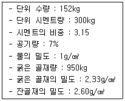
- 665kg
- 715kg
- 765kg
- 815kg
(정답률: 58%)
2과목: 건설재료 및 시험
21. 시멘트의 분말도에 대한 설명으로 틀린 것은?
- 분말도가 높으면 응결이 빠르고 발열량이 많아진다.
- 분말도가 높으면 초기강도는 작으나 장기강도가 크다.
- 분말도가 높으면 블리딩이 적고 워커블한 콘크리트가 얻어진다.
- 분말도가 높으면 풍화하기 쉽고 건조수축이 커져서 균열이 발생하기 쉽다.
(정답률: 68%)
22. 혼화재인 고로슬래그 미분말에 대한 설명으로 틀린 것은?
- 매스 콘크리트용으로 적합하다.
- 콘크리트의 수밀성, 화학적 저항성 등이 좋아진다.
- 알칼리 골재반응의 억제에 대한 효과가 크다.
- 혼합하는 양이 많아질수록 굳지 않은 콘크리트의 응결이 빨라진다.
(정답률: 62%)
23. 잔골재의 함수 상태 시험결과 절대 건조 상태에서 1100g, 공기 중 건조 상태에서 1120g, 표면 건조 포화 상태에서 1152g, 습윤 상태에서 1170g이었다면 함수율은?
- 6.4%
- 5.2%
- 4.6%
- 3.6%
(정답률: 49%)
24. 조립률이 3.0인 잔골재와 조립률이 8.0인 굵은골재를 1:2의 중량비로 섞을 때 혼합 골재의 조립률은?
- 3.0
- 5.3
- 6.3
- 8.0
(정답률: 63%)
25. 아스팔트의 인화점 및 연소점에 대한 설명으로 옳은 것은?
- 연소점은 인화점보다 25~60℃ 정도 낮다.
- 아스팔트를 가열하여 고체상에서 액상으로 되는 과정 중에 일정한 반죽질기에 달했을 때의 온도를 인화점이라고 한다.
- 인화점 측정 후 다시 가열을 계속하여 시료가 적어도 5초간 연소를 계속한 최초의 온도를 연소점이라 한다.
- 아스팔트의 인화점은 원유의 종류, 제조방법, 침입도에 의하여 다르지만 대체로 100~150℃의 범위에 있다.
(정답률: 56%)
26. 이형철근에서 표면의 마디를 만드는 이유로 가장 적합한 것은?
- 부착강도 향상
- 인장강도 향상
- 압축강도 향상
- 충격강도 향상
(정답률: 67%)
27. 토목섬유의 주된 기능이 아닌 것은?
- 혼합기능
- 배수기능
- 분리기능
- 보강기능
(정답률: 64%)
28. 르샤틀리에 비중벽의 0.7mL까지 광유를 주입하고 시멘트 64g을 가하여 눈금이 21.9mL로 되었을 때 이 시멘트의 비중은?
- 3.00
- 3.02
- 3.⑤
- 3.14
(정답률: 66%)
29. 다음 중 천연 아스팔트에 속하지 않은 것은?
- 록 아스팔트
- 블론 아스팔트
- 샌드 아스팔트
- 레이크 아스팔트
(정답률: 61%)
30. 화산회 또는 회산사가 퇴적 고결된 암석으로 내화성이 크고 풍화되어 실트질의 흙이 되는 암석은?
- 혈암
- 응회암
- 점판암
- 천매암
(정답률: 66%)
31. 다음 중 폭발력이 가장 강하고 수중에서도 폭발할 수 있는 다이너마이트는?
- 교질 다이너마이트
- 규조토 다이너마이트
- 분말상 다이너마이트
- 스트레이트 다이너마이트
(정답률: 74%)
32. 목재의 함수율(질량비, %)과 압축강도의 관계를 나타내는 그래프에서 A점을 무엇이라 하는가?
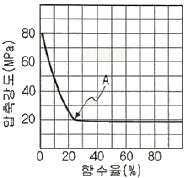
- 항복점
- 탄성한계
- 섬유포화점
- 절대건조상태
(정답률: 62%)
33. 시멘트의 강도 시험 방법(KS L ISO 679)에서 모르타르의 제작 방법 중 배합에 대한 설명으로 옳은 것은?
- 질량에 의한 비율로 시멘트와 표준시를 1:2의 비율로 하며, 물-시멘트비는 40%로 한다.
- 질량에 의한 비율로 시멘트와 표준시를 1:2의 비율로 하며, 물-시멘트비는 50%로 한다.
- 질량에 의한 비율로 시멘트와 표준시를 1:3의 비율로 하며, 물-시멘트비는 40%로 한다.
- 질량에 의한 비율로 시멘트와 표준시를 1:3의 비율로 하며, 물-시멘트비는 50%로 한다.
(정답률: 70%)
34. 콘크리트 내부에 독립된 미세기포를 발생시켜 콘크리트의 워커빌리티 개선과 동결융해에 대한 저항성을 증대시키기 위해 사용되는 혼화재는?
- AE제
- 지연제
- 기포제
- 응결경화촉진제
(정답률: 66%)
35. 재료의 역학적 성질에 대한 설명으로 틀린 것은?
- 강성:외력을 받을 때 변형에 저항하는 성질을 말한다.
- 소성:외력을 받아서 변형한 재료가 외력을 다시 제거하면 원형으로 돌아가는 성질을 말한다.
- 탄성계수:어떤 재료가 비례한도 내에서 외력을 받아 길이변화를 일으켰을 때의 응력과 변형률의 비를 말한다.
- 푸아송 비:탄성체에 인장력이나 압축력이 작용할 때 그 응력의 방향에 변형률이 생기는 동시에 그 직각의 횡방향에도 변형률이 생기는데 이 두 변형률의 비를 말한다.
(정답률: 64%)
36. 아스팔트 침입도 시험에 대한 설명으로 틀린 것은?
- 침입도 항온수조의 온도는 25℃가 표준이다.
- 시료는 기포가 들어가지 않도록 천천히 혼합하면서 녹인다.
- 시료는 부분적인 과열을 피하고, 연화점보다 90℃ 이상 높지 않도록 가열한다.
- 일정 온도로 유지된 시료에 규정된 침이 일정 시간 내에 진입하는 길이를 1mm 단위로 측정한다.
(정답률: 52%)
37. 콘크리트용 골재에 요구되는 성질로 틀린 것은?
- 마모에 대한 저항성이 커야 한다.
- 물리적으로 안정하고 내구성이 커야 한다.
- 시멘트 풀과 잘 부착되기 위해 표면이 매끈한 것이 좋다.
- 잔골재의 유해물 함유량 한도에서 염화물(NaC1 환상량)의 한도 최댓값은 0.04%이다.
(정답률: 68%)
38. 골재의 단위용적질량 및 실적률 시험(KS F 25⑤)을 실시한 결과가 아래와 같을 때 이 골재의 공극률은?
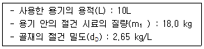
- 25.3%
- 32.1%
- 67.9%
- 74.7%
(정답률: 58%)
39. 연속적인 대량의 콘크리트 타설 시 작업이음(cold and construction joint)의 방지 또는 콘크리트의 운반시간이 긴 경우 효과적인 혼화제는?
- 지연제
- 감수제
- 발포제
- 방청제
(정답률: 74%)
40. 다음 석재 중 일반적으로 압축강도가 가장 큰 것은?
- 화강암
- 정판암
- 안산암
- 사암
(정답률: 73%)
3과목: 건설시공학
41. 유토곡선에 대한 설명으로 틀린 것은?
- 유토곡선의 기울기가 (-)이면 절토구간, (+)이면 성도구간이 된다.
- 유토곡선의 기울기가 (+)에서 (-)로 되는 극대점에서 흙은 좌에서 우로 운반 시공한다.
- 유토곡선의 기울기가 (-)에서 (+)로 변하는 극소점에서는 흙은 우에서 좌로 운반 시공한다.
- 평균 운반거리는 전토량 2등분 선상의 점을 통하는 평행선과 나란한 수평거리로 표시한다.
(정답률: 64%)
42. 다져진 토량 38400m3을 성토 하는데 흐트러진 토량 30000m3이 있다. 이 떄 부족 토량은 자연 상태 토량으로 얼마인가? (단, 토량 변화율 L=1.25, C=0.8이다.)
- 42000m3
- 24000m3
- 18000m3
- 7800m3
(정답률: 55%)
43. 보조기층, 기층 등의 방수성을 높이고, 보조기층과 기층 위에 포설하는 아스팔트 혼합물과의 부착을 좋게 하기 위해 점성이 낮은 역청재료를 살포한 얇은 층을 무엇이라 하는가?
- 택 코트
- 실 코트
- 아마 코트
- 프라임 코트
(정답률: 64%)
44. 교량 가설 공법 중 동바리를 사용하지 않는 공법은?
- 벤트 공법(Bent method)
- 새들 공법(Saddle method)
- 크레인식 공법(Crane method)
- 가설 트러스 공법(Erection tuss method)
(정답률: 37%)
45. 중력 배수가 곤란한 모래질 지반의 지하수위를 저하시키기 위하여 파이프 선단에 여과기를 부착하여 흡입 펌프로 물을 배출시키는 강제 배수공법은?
- 치환 공법
- 프리로딩 공법
- 웰포인트 공법
- 샌드드레인 공법
(정답률: 60%)
46. 침매공법의 장점이 아닌 것은?
- 유속에 상관없이 시공할 수 있으며, 협소한 수로에 적합하다.
- 육상에서 터널 구조체를 제작하므로 수밀성이 높다.
- 단면형상이 비교적 자유롭고 큰 단면으로 할 수 있다.
- 수중에 설치하므로 부력작용으로 자중이 작아 연약지반 위에도 시공이 가능하다.
(정답률: 56%)
47. 얕은 기초에서 외부의 하중에 의해 발생된 과잉간수압이 모두 소산된 후에도 발생되는 침하를 무엇이라 하는가?
- 즉하침하
- 탄성침하
- 1차 압밀침하
- 2차 입밀침하
(정답률: 60%)
48. 압축강도 시험에서 10개의 공시체를 측정하여 평균값이 30Mpa, 표준편차 1.5MPa일 때의 변동 계수는?
- 5%
- 8%
- 10%
- 15%
(정답률: 48%)
49. 건설기계의 기계 경비 중 기계 손료를 옳게 나타낸 것은?
- 운전경비+운전비+운송비
- 감가상각비+정비비+관리비
- 감가상각비+운전비+관리비
- 감가상각비+운전비+운전경비
(정답률: 62%)
50. 리퍼로 암석을 파쇄하면서 불도저 작업을 할 때 1시간당 합성작업량 식으로 옳은 것은? (단, Q:시간당 리퍼불도저의 작업량(m3/h), Q1:시간당 리퍼의 작업량(m3/h, Q2:시간당 도저의 작업량(m3/h)이다.)
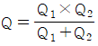
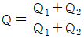
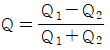
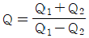
(정답률: 81%)
51. 관의 지름 D=10cm, 관의 길이 L=80m, 관 길이에 대한 낙차 h=1.0m일 때, 관내 평균유속을 Giesler 공식에 의해 구하면 얼마인가?
- 0.5071m/s
- 0.6071m/s
- 0.7071m/s
- 0.8071m/s
(정답률: 34%)
52. 본바닥 토량 500m3을 덤프트럭 2대로 운반하면 운반 소요 일수는? (단, 1대 운반 적재량은 4m3, 1일 1대당 운반회수는 5회, L=1.20이다.)
- 12일
- 15일
- 18일
- 21일
(정답률: 71%)
53. 모래층에 널말뚝을 설치하여 물막이 공사를 하려고 한다. 이 때 예상되는 분사현상에 대한 설명으로 틀린 것은?
- 분사현상이 발생하는 한계의 값을 한계동수경사(ic)라고 한다.
- 분사현상은 침투수압이 모래의 유효응력보다 큰 경우에 발생한다.
- 분사현상의 방지 목적으로 널말뚝을 더 깊게 받아 침투경로를 길게 해 준다.
- 분사현상을 방지하기 위하여 느슨한 모래로 대체하는 것이 효과적이다.
(정답률: 68%)
54. 연약 점성토층을 관통하여 철근콘크리트 파일을 받았을 때 부마찰력 값은? (단, 지반의 일축압축강도(qu)가 30kN/m2, 파일 지름(D)이 50cm, 관잎깊이(L)가 15m이다.)
- 253kN
- 353kN
- 453kN
- 553kN
(정답률: 46%)
55. 구조형식에 의해 교량을 분류할 때 아래에서 설명하는 교량은?
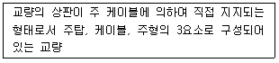
- 현수교
- 아치교
- 사장교
- 트러스교
(정답률: 62%)
56. 터널 굴착공법 중 TBM공법의 장점에 대한 설명으로 틀린 것은?
- 기계굴착이므로 주변 암반에 대한 이완이 적다.
- 단면을 분할하여 굴착하므로 지질변화가 많은 지형에 적합하다.
- 여굴이 거의 발생하지 않으므로 라이닝의 두께를 얇게 할 수 있다.
- 기계에 의한 굴착이므로 작업환경이 양호하며 낙반 등의 사고위험이 적다.
(정답률: 57%)
57. 아래에서 설명하는 옹벽의 종류는?
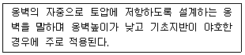
- 켄틸레버식 옹벽
- 보강토 옹벽
- 부벽식 옹벽
- 중력식 옹벽
(정답률: 58%)
58. 비탈면 보호공법 중 돌쌓기 공법에서 줄눈에 모르타르를 사용하고 뒤채움에 콘크리트를 사용하는 방식은?
- 메쌇기
- 찰쌓기
- 정층쌓기
- 부정층쌓기
(정답률: 63%)
59. 시멘트 콘크리트 포장과 비교한 아스팔트 콘크리트 포장의 특성으로 틀린 것은?
- 국부적 파손에 대한 보수가 곤란하다.
- 주행충격이 작고 운전자의 피로감이 적다.
- 양생기간이 짧아 시공 후 즉시 교통 개방이 가능하다.
- 잦은 덧씌우기 등 유지관리비가 많이 소요된다.
(정답률: 63%)
60. 다음 중 콘크리트 댐이 아닌 것은?
- 아치 댐
- 중력 댐
- 어스 댐
- 중공 중력 댐
(정답률: 57%)
4과목: 토질 및 기초
61. 포화점토의 비압밀 비배수 시험에 대한 설명으로 틀린 것은?
- 시공 직후의 안정 해석에 적용된다.
- 구속압력을 증대시키면 유효응력은 커진다.
- 구속압력을 증대한 만큼 간극수압은 증대한다.
- 구속압력의 크기에 관계없이 전단강도는 일정하다.
(정답률: 23%)
62. 아래 그림의 투수층에서 피에조미터를 꽂은 두 지점 사이의 동수경사(i)는 얼마인가?
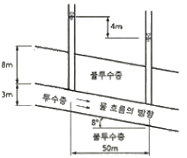
- 0.063
- 0.079
- 0.126
- 0.162
(정답률: 52%)
63. 다음 기초의 형식 중 얕은 기초인 것은?
- 확대기초
- 우물통 기초
- 공기 케이슨 기초
- 철근콘크리트 말뚝기초
(정답률: 46%)
64. 흙 속에서의 물의 흐름 중 연직유효응력의 증가를 가져오는 것은?
- 정수압상태
- 상향흐름
- 하향흐름
- 수평흐름
(정답률: 56%)
65. 평균 기온에 따른 동결지수가 520℃ㆍdoys였다. 이 지방의 정수(C)가 4일 때 동결깊이는? (단, 데라다 공식을 이용한다.)
- 130.2cm
- 102.4cm
- 91.2cm
- 22.8cm
(정답률: 55%)
66. 수직 응력이 60kN/m2이고, 흙의 내부마찰각이 45°일 때 모래의 전단강도는? (단, 점착력(c)은 0이다.)
- 24kN/m2
- 36kN/m2
- 48kN/m2
- 60kN/m2
(정답률: 45%)
67. 흙의 다짐에 대한 설명으로 틀린 것은?
- 건조밀도-함수비 곡선에서 최적함수비와 최대건조밀도를 구할 수 있다.
- 사질토는 점성토에 비해 륵의 건조밀도-함수비 곡선의 경사가 완만하다.
- 최대건조밀도는 사질토일수록 크고, 점성토일수록 작다.
- 모래질 흙은 진동 또는 진동을 동반하는 다짐방법이 유효하다.
(정답률: 42%)
68. 풍화작용에 의하여 분해되어 원 위치에서 이동하지 않고 모암의 광물질을 덮고 있는 상태의 흙은?
- 호성토(Lacustrine soil)
- 충적토(Alluvial soil)
- 빙적토(Glacial soil)
- 잔적토(Residual soil)
(정답률: 48%)
69. 실내다짐시험 결과 최대건조단위중량이 15.6kN/m3이고, 다짐도가 95%일 때 현장의 건조단위중량은 얼마인가?
- 13.62kN/m23
- 14.82kN/m23
- 16.01kN/m23
- 17.43kN/m23
(정답률: 63%)
70. 10개의 무리 말뚝기초에 있어서 효율이 0.8, 단항으로 계산한 말뚝 1개의 허용지지력이 100kN일 때 군항의 허용지지력은?
- 500kN
- 800kN
- 1000kN
- 1250kN
(정답률: 68%)
71. 채취된 시료의 교란정도는 면적비를 계산하여 통상 면적비가 몇 %보다 작으면 여잉토의 혼입이 불가능한 것으로 보고 흐트러지지 않는 시료로 간주하는가?
- 10%
- 13%
- 15%
- 20%
(정답률: 49%)
72. 절편법에 의한 사면의 안정해석 시 가장 먼저 결정되어야 할 사항은?
- 질편의 중량
- 가상파괴 활동면
- 활동면상의 점착력
- 활동면상의 내부마찰각
(정답률: 59%)
73. 아래 기호를 이용하여 현장밀도시험의 결과로부터 건조밀도(pd)를 구하는 식으로 옳은 것은?
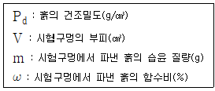
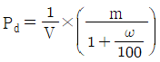
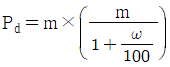
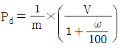
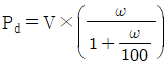
(정답률: 52%)
74. 말뚝기초의 지지력에 관한 설명으로 틀린 것은?
- 부마찰력은 아래 방향으로 작용한다.
- 말뚝선단부의 지지력과 말뚝주변 마찰력의 합이 말뚝의 지지력이 된다.
- 점성토 지반에는 동역학적 지지력 공식이 잘 맞는다.
- 재하시험 결과를 이용하는 것이 신뢰도가 큰 편이다.
(정답률: 43%)
75. 주동토압계수를 Ka, 수동토압계수를 Kp, 정지토압계수를 Ko라 할 때 토압계수 크기의 비교로 옳은 것은?
- Ko＞Kp＞Ka
- Ko＞Ka＞Kp
- Kp＞Ko＞Ka
- Ka＞Ko＞Kp
(정답률: 64%)
76. 그림에서 분사현상에 대한 안전율은 얼마인가? (단, 모래의 비중은 2.65, 간극비는 0.6이다.)
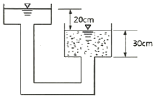
- 1.01
- 1.55
- 1.86
- 2.44
(정답률: 49%)
77. 비교란 점토(φ=0)에 대한 일축압축강도(qu)가 36kN/m2이고 이 흙을 되비빔을 했을 때의 일축압축강도(qur)가 12kN/m2이었다. 이 흙의 점착력(Cu)과 예민비(St)는 얼마인가?
- Cu=24kN/m2, St=0.3
- Cu=24kN/m2, St=3.0
- Cu=18kN/m2, St=0.3
- Cu=18kN/m2, St=3.0
(정답률: 43%)
78. Samd Drain 공법에서 Uu(연직방향의 압밀도)=0.9, Uh(수평방향의 압밀도)=0.15인 경우, 수직 및 수평방향을 고려한 압밀도(Uuh)는 얼마인가?
- 99.15%
- 96.85%
- 94.5%
- 91.5%
(정답률: 28%)
79. 가로 2m, 세로 4m의 직사각형 케이슨 지중 16m까지 관입되었다. 단위면적당 마찰력 f=0.2 36kN/m2일 때 케이슨에 작용하는 주면마찰력(skin friction)은 얼마인가?
- 38.4kN
- 27.5kN
- 19.2kN
- 12.8kN
(정답률: 21%)
80. 점토 덩어리는 재차 물을 흡수하면 고체-반고체-소성-액성의 단계를 거치지 않고 물을 흡착함과 동시에 흙 입자 간의 결합력이 감소되어 액성상태로 붕괴한다. 이러한 현상을 무엇이라 하는가?
- 비화작용(Slaking)
- 팽창작용(Bulking)
- 수화작용(Hydration)
- 윤활작용(Lubrication)
(정답률: 50%)
공시체의 지름이 100mm 이므로 반지름은 50mm이다.
단면적 = π x 반지름^2 = 3.14 x 50^2 = 7,850mm^2
따라서, 인장강도 = 95kN / 7,850mm^2 = 0.012MPa = 12MPa
답안 보기에서 정답이 "3.0MPa"인 이유는 오답이다.